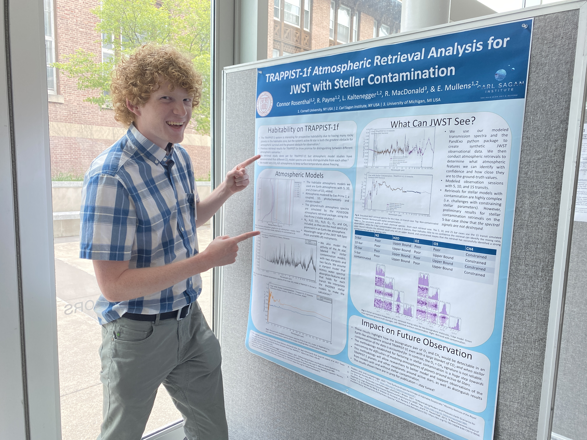
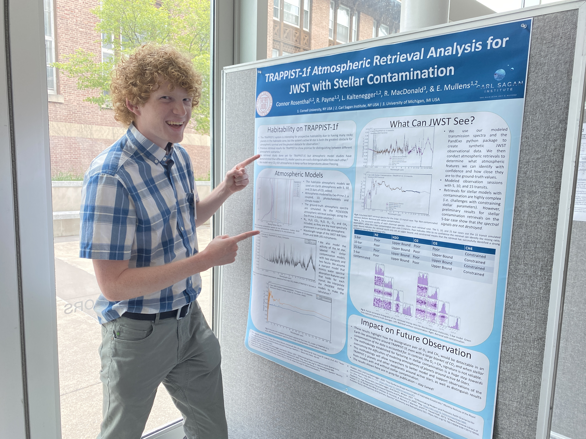

Research
 

My current research interests lie in the search for and atmospheric characterizations of rocky exoplanets with JWST. As a post-bacc researcher at the University of Michigan, I am currently working with Dr. Mary Anne Limbach to study the infrared spectra of two white dwarf stars, looking for unexpected infrared emission that could indicate the presence of a planet. This work is ongoing, but initial results show a possible source of excess emission around van Maanen's star. Stay tuned!
Previously, I worked with Professor Lisa Kaltenegger at Cornell as an undergraduate researcher. I created model transmission spectra for the Earth-like exoplanet TRAPPIST-1f based on a potentially habitable atmospheric model. I then simulated JWST observations of multiple transits of this model TRAPPIST-1f and performed atmospheric retrievals using the POSEIDON open-source tool to determine how many transits of observation, JWST needs to constrain a habitable atmosphere on TRAPPIST-1f, as well as what instruments are needed and what atmospheric features are recoverable. This work is in the final stages of writing, stay tuned!